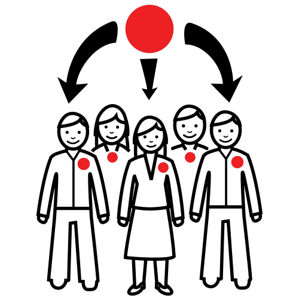
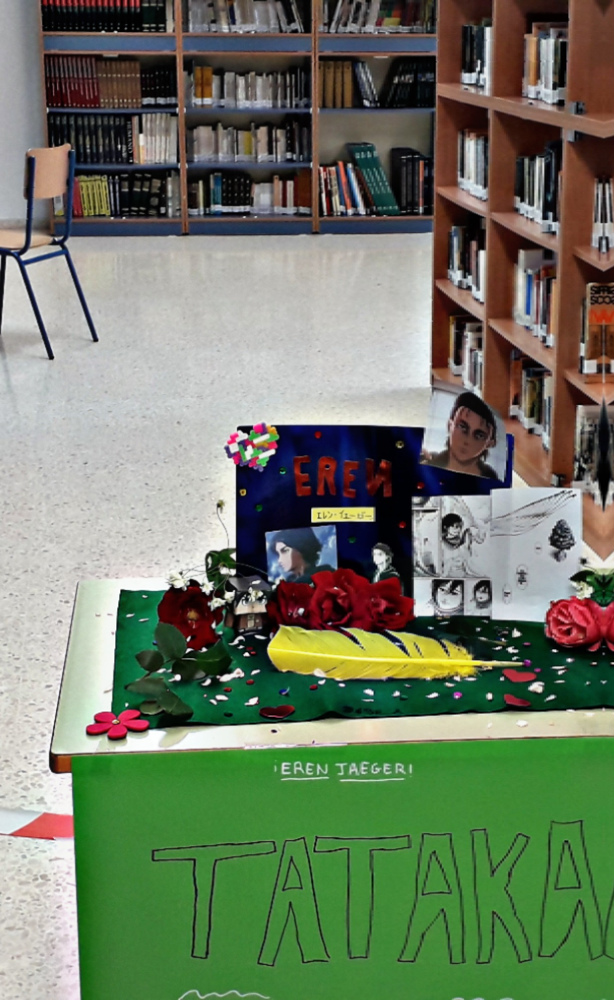

Ha llegado la hora de la verdad. Ya sabemos muchísimo sobre el género lírico y cómo ha ido evolucionando a lo largo de toda nuestra historia. ¿Estamos preparados para contar al mundo cuáles son los mejores poemas de nuestra tradición castellana y quiénes los escribieron?
Lectura facilitada
Seguro que tú recuerdas el reto final:
Homenajear a un personaje o famoso desaparecido.
Recitar en público una elegía.
Grabar el poema en un Cancionaro.
¡Vamos a petarlo!
Vamos a crear un canal en la red social que más nos guste y a él subiremos todos los materiales creados a partir de lo que hemos aprendido. Vayamos por orden:
¿Qué nombre le ponemos al canal? Hacemos una lluvia de ideas en grupo, los ponemos en común y elegiremos el más votado.
¿Le hacemos un logo que nos identifique? Venga, eso se lo dejamos a los artistas de la clase ;)
Para hacer tu videopoema o reel seguiremos esta guía de la profesora Pepa Botella, aunque nos centraremos en el periodo histórico que hemos estudiado: desde la Edad Media hasta el siglo XVII.
Para realizar el reto final tú sigues los siguientes pasos:
1. Formas un grupo con otra persona.

2. Eliges con tu pareja a una persona desaparecida para realizar el homenaje del reto final. Esa persona puede ser un personaje de un libro, película, serie o una persona famosa.
3. Puedes crear un altar con diferentes objetos. Ese altar es un recuerdo de esa persona. Aquí tienes un ejemplo de altar. Este paso es opcional.

En este ejemplo tú puedes ver los siguientes objetos:
Mesa con mantel verde.
Tarjetas con fotos de esa persona.
Flores.
Una pluma amarilla.
Confetti.
Una cartulina con una frase escrita.
4. Escribes con tu pareja el poema fúnebre.
Para ello tú puedes recordar la siguiente información:
El formato y la presentación se ajustan a las instrucciones facilitadas en el enunciado y el trabajo es muy original y creativo.
El formato y la presentación son adecuados aunque presentan leves errores respecto a las instrucciones facilitadas y el trabajo es parcialmente original y creativo.
El formato y la presentación son mejorables en determinados aspectos y el trabajo es poco original y creativo.
El formato y la presentación no se ajustan en absoluto al tipo de trabajo requerido y no es original, ni creativo.
Explicación de la obra o autor estudiado
El material (post/reel) refleja las características de la lírica estudiadas y alguno de los tópicos más frecuentes.
El material (post/reel) refleja parcialmente las características de la lírica estudiadas y alguno de los tópicos más frecuentes.
El material (post/reel) no refleja adecuadamente las características de la lírica estudiadas y/o no muestra ninguno de los tópicos más frecuentes.
El material (post/reel) contiene errores en las características de la lírica estudiadas y no muestra ninguno de los tópicos más frecuentes.
¿Qué he aprendido?
En este último apartado, la 5ª entrada de tu Diario de Aprendizaje, te voy a proponer que pienses en qué ha sido lo más importante de todo lo que has aprendido para conseguir el reto que te proponía al inicio del proyecto.
Para su autoevaluación, también puedes guiarte por esta rúbrica para evaluar el conjunto de criterios trabajados.